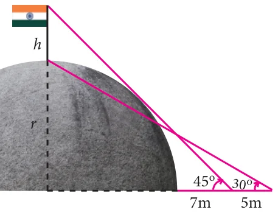

- Find the angle of elevation of the top of a tower from a point on the ground, which is 30 m away from the foot of a tower of height \(10\sqrt{3}\) m.
- A road is flanked on either side by continuous rows of houses of height \(4\sqrt{3}\) m with no space in between them. A pedestrian is standing on the median of the road facing a row house. The angle of elevation from the pedestrian to the top of the house is \(30^\circ\). Find the width of the road.
- To a man standing outside his house, the angles of elevation of the top and bottom of a window are 60° and 45° respectively. If the height of the man is 180 cm and if he is 5 m away from the wall, what is the height of the window? (\(\sqrt{3} = 1.732\))
- A statue 1.6 m tall stands on the top of a pedestal. From a point on the ground, the angle of elevation of the top of the statue is \(60^\circ\) and from the same point the angle of elevation of the top of the pedestal is \(40^\circ\). Find the height of the pedestal. (\(\tan 40^\circ = 0.8391\), \(\sqrt{3} = 1.732\))
- A flag pole of height ‘\(h\)’ metres is on the top of the hemispherical dome of radius ‘\(r\)’ metres. A man is standing 7 m away from the dome. Seeing the top of the pole at an angle 45° and moving 5 m away from the dome and seeing the bottom of the pole at an angle 30°. Find (i) the height of the pole (ii) radius of the dome. (\(\sqrt{3} = 1.732\))

- The top of a 15 m high tower makes an angle of elevation of 60° with the bottom of an electronic pole and angle of elevation of 30° with the top of the pole. What is the height of the electric pole?